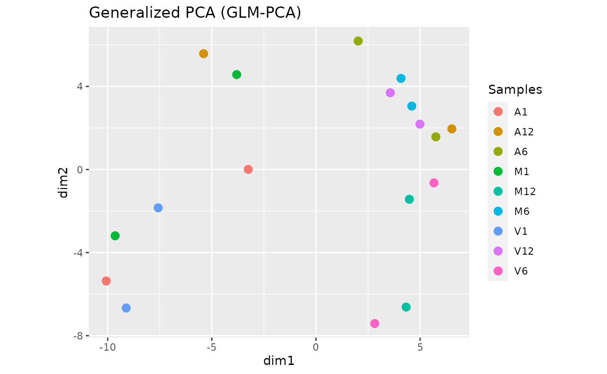

systemPipeTools: Data Visualizations
Author: Daniela Cassol (danielac@ucr.edu) and Thomas Girke (thomas.girke@ucr.edu)
Last update: 27 April, 2021
systemPipeTools.Rmd
Data Visualization with systemPipeR
systemPipeTools package extends the widely used systemPipeR (SPR) (H Backman and Girke 2016) workflow environment with enhanced toolkit for data visualization, including utilities to automate the analysis of differentially expressed genes (DEGs). systemPipeTools provides functions for data transformation and data exploration via scatterplots, hierarchical clustering heatMaps, principal component analysis, multidimensional scaling, generalized principal components, t-Distributed Stochastic Neighbor embedding (t-SNE), and MA and volcano plots. All these utilities can be integrated with the modular design of the systemPipeR environment that allows users to easily substitute any of these features and/or custom with alternatives.
Installation
systemPipeTools environment can be installed from the R console using the BiocManager::install command. The associated package systemPipeR can be installed the same way. The latter provides core functionalities for defining workflows, interacting with command-line software, and executing both R and/or command-line software, as well as generating publication-quality analysis reports.
if (!requireNamespace("BiocManager", quietly = TRUE)) install.packages("BiocManager")
BiocManager::install("systemPipeTools")
BiocManager::install("systemPipeR")Metadata and Reads Counting Information
The first step is importing the targets file and raw reads counting table. - The targets file defines all FASTQ files and sample comparisons of the analysis workflow. - The raw reads counting table represents all the reads that map to gene (row) for each sample (columns).
## Targets file
targetspath <- system.file("extdata", "targets.txt", package = "systemPipeR")
targets <- read.delim(targetspath, comment = "#")
cmp <- systemPipeR::readComp(file = targetspath, format = "matrix", delim = "-")
## Count table file
countMatrixPath <- system.file("extdata", "countDFeByg.xls", package = "systemPipeR")
countMatrix <- read.delim(countMatrixPath, row.names = 1)
showDT(countMatrix)Data Transformation
For gene differential expression, raw counts are required, however for data visualization or clustering, it can be useful to work with transformed count data. exploreDDS function is convenience wrapper to transform raw read counts using the DESeq2 package transformations methods. The input file has to contain all the genes, not just differentially expressed ones. Supported methods include variance stabilizing transformation (vst) (Anders and Huber (2010)), and regularized-logarithm transformation or rlog (Love, Huber, and Anders (2014)).
exploredds <- exploreDDS(countMatrix, targets, cmp = cmp[[1]], preFilter = NULL,
transformationMethod = "rlog")
exploredds## class: DESeqTransform
## dim: 116 18
## metadata(1): version
## assays(1): ''
## rownames(116): AT1G01010 AT1G01020 ... ATMG00180 ATMG00200
## rowData names(51): baseMean baseVar ... dispFit rlogIntercept
## colnames(18): M1A M1B ... V12A V12B
## colData names(2): condition sizeFactorUsers are strongly encouraged to consult the DESeq2 vignette for more detailed information on this topic and how to properly run DESeq2 on data sets with more complex experimental designs.
Scatterplot
To decide which transformation to choose, we can visualize the transformation effect comparing two samples or a grid of all samples, as follows:
exploreDDSplot(countMatrix, targets, cmp = cmp[[1]], preFilter = NULL, samples = c("M12A",
"M12A", "A12A", "A12A"), scattermatrix = TRUE)## `stat_bin()` using `bins = 30`. Pick better value with `binwidth`.
## `stat_bin()` using `bins = 30`. Pick better value with `binwidth`.
## `stat_bin()` using `bins = 30`. Pick better value with `binwidth`.
## `stat_bin()` using `bins = 30`. Pick better value with `binwidth`.The scatterplots are created using the log2 transform normalized reads count, variance stabilizing transformation (VST) (Anders and Huber (2010)), and regularized-logarithm transformation or rlog (Love, Huber, and Anders (2014)).
Hierarchical Clustering Dendrogram
The following computes the sample-wise correlation coefficients using the stats::cor() function from the transformed expression values. After transformation to a distance matrix, hierarchical clustering is performed with the stats::hclust function and the result is plotted as a dendrogram, as follows:
hclustplot(exploredds, method = "spearman")The function provides the utility to save the plot automatically.
Hierarchical Clustering HeatMap
This function performs hierarchical clustering on the transformed expression matrix generated within the DESeq2 package. It uses, by default, a Pearson correlation-based distance measure and complete linkage for cluster join. If samples selected in the clust argument, it will be applied the stats::dist() function to the transformed count matrix to get sample-to-sample distances. Also, it is possible to generate the pheatmap or plotly plot format.
## Samples plot
heatMaplot(exploredds, clust = "samples", plotly = FALSE)
If ind selected in the clust argument, it is necessary to provide the list of differentially expressed genes for the exploredds subset.
## Individuals genes identified in DEG analysis DEG analysis with `systemPipeR`
degseqDF <- systemPipeR::run_DESeq2(countDF = countMatrix, targets = targets, cmp = cmp[[1]],
independent = FALSE)
DEG_list <- systemPipeR::filterDEGs(degDF = degseqDF, filter = c(Fold = 2, FDR = 10))
### Plot
heatMaplot(exploredds, clust = "ind", DEGlist = unique(as.character(unlist(DEG_list[[1]]))))The function provides the utility to save the plot automatically.
Principal Component Analysis
This function plots a Principal Component Analysis (PCA) from transformed expression matrix. This plot shows samples variation based on the expression values and identifies batch effects.
PCAplot(exploredds, plotly = FALSE)
The function provides the utility to save the plot automatically.
Multidimensional scaling with MDSplot
This function computes and plots multidimensional scaling analysis for dimension reduction of count expression matrix. Internally, it is applied the stats::dist() function to the transformed count matrix to get sample-to-sample distances.
MDSplot(exploredds, plotly = FALSE)
The function provides the utility to save the plot automatically.
Dimension Reduction with GLMplot
This function computes and plots generalized principal components analysis for dimension reduction of count expression matrix.
exploredds_r <- exploreDDS(countMatrix, targets, cmp = cmp[[1]], preFilter = NULL,
transformationMethod = "raw")
GLMplot(exploredds_r, plotly = FALSE)
The function provides the utility to save the plot automatically.
MA plot
This function plots log2 fold changes (y-axis) versus the mean of normalized counts (on the x-axis). Statistically significant features are colored.
The function provides the utility to save the plot automatically.
t-Distributed Stochastic Neighbor embedding with tSNEplot
This function computes and plots t-Distributed Stochastic Neighbor embedding (t-SNE) analysis for unsupervised nonlinear dimensionality reduction of count expression matrix. Internally, it is applied the Rtsne::Rtsne() (Krijthe 2015) function, using the exact t-SNE computing with theta=0.0.
tSNEplot(countMatrix, targets, perplexity = 5)Volcano plot
A simple function that shows statistical significance (p-value) versus magnitude of change (log2 fold change).
volcanoplot(degseqDF, comparison = "M12-A12", filter = c(Fold = 1, FDR = 20), genes = "ATCG00280")Version information
## R Under development (unstable) (2021-02-04 r79940)
## Platform: x86_64-pc-linux-gnu (64-bit)
## Running under: Ubuntu 20.04.2 LTS
##
## Matrix products: default
## BLAS: /usr/lib/x86_64-linux-gnu/blas/libblas.so.3.9.0
## LAPACK: /home/dcassol/src/R-devel/lib/libRlapack.so
##
## locale:
## [1] LC_CTYPE=en_US.UTF-8 LC_NUMERIC=C
## [3] LC_TIME=en_US.UTF-8 LC_COLLATE=en_US.UTF-8
## [5] LC_MONETARY=en_US.UTF-8 LC_MESSAGES=en_US.UTF-8
## [7] LC_PAPER=en_US.UTF-8 LC_NAME=C
## [9] LC_ADDRESS=C LC_TELEPHONE=C
## [11] LC_MEASUREMENT=en_US.UTF-8 LC_IDENTIFICATION=C
##
## attached base packages:
## [1] stats graphics grDevices utils datasets methods base
##
## other attached packages:
## [1] systemPipeTools_0.99.3 BiocStyle_2.19.2
##
## loaded via a namespace (and not attached):
## [1] backports_1.2.1 BiocFileCache_1.99.6
## [3] systemfonts_1.0.1 plyr_1.8.6
## [5] lazyeval_0.2.2 splines_4.1.0
## [7] crosstalk_1.1.1 BiocParallel_1.25.5
## [9] GenomeInfoDb_1.27.11 ggplot2_3.3.3
## [11] digest_0.6.27 htmltools_0.5.1.1
## [13] fansi_0.4.2 magrittr_2.0.1
## [15] checkmate_2.0.0 memoise_2.0.0
## [17] BSgenome_1.59.4 base64url_1.4
## [19] limma_3.47.12 Biostrings_2.59.2
## [21] annotate_1.69.2 matrixStats_0.58.0
## [23] systemPipeR_1.25.11 pkgdown_1.6.1
## [25] prettyunits_1.1.1 jpeg_0.1-8.1
## [27] colorspace_2.0-0 blob_1.2.1
## [29] rappdirs_0.3.3 ggrepel_0.9.1
## [31] textshaping_0.3.3 xfun_0.22
## [33] dplyr_1.0.5 crayon_1.4.1
## [35] RCurl_1.98-1.3 jsonlite_1.7.2
## [37] genefilter_1.73.1 VariantAnnotation_1.37.1
## [39] brew_1.0-6 survival_3.2-11
## [41] ape_5.5 glue_1.4.2
## [43] gtable_0.3.0 zlibbioc_1.37.0
## [45] XVector_0.31.1 DelayedArray_0.17.10
## [47] V8_3.4.1 BiocGenerics_0.37.4
## [49] scales_1.1.1 pheatmap_1.0.12
## [51] DBI_1.1.1 GGally_2.1.1
## [53] edgeR_3.33.3 Rcpp_1.0.6
## [55] viridisLite_0.4.0 xtable_1.8-4
## [57] progress_1.2.2 tidytree_0.3.3
## [59] bit_4.0.4 rsvg_2.1.1
## [61] stats4_4.1.0 DT_0.18
## [63] htmlwidgets_1.5.3 httr_1.4.2
## [65] RColorBrewer_1.1-2 ellipsis_0.3.1
## [67] farver_2.1.0 pkgconfig_2.0.3
## [69] reshape_0.8.8 XML_3.99-0.6
## [71] sass_0.3.1 dbplyr_2.1.1
## [73] locfit_1.5-9.4 utf8_1.2.1
## [75] labeling_0.4.2 later_1.2.0
## [77] tidyselect_1.1.0 rlang_0.4.10
## [79] AnnotationDbi_1.53.1 munsell_0.5.0
## [81] tools_4.1.0 cachem_1.0.4
## [83] generics_0.1.0 RSQLite_2.2.7
## [85] evaluate_0.14 stringr_1.4.0
## [87] fastmap_1.1.0 yaml_2.2.1
## [89] ragg_1.1.2 ggtree_2.5.2
## [91] knitr_1.33 bit64_4.0.5
## [93] fs_1.5.0 purrr_0.3.4
## [95] KEGGREST_1.31.1 nlme_3.1-152
## [97] mime_0.10 formatR_1.9
## [99] aplot_0.0.6 biomaRt_2.47.8
## [101] compiler_4.1.0 plotly_4.9.3
## [103] filelock_1.0.2 curl_4.3
## [105] png_0.1-7 treeio_1.15.7
## [107] tibble_3.1.1 geneplotter_1.69.0
## [109] bslib_0.2.4 stringi_1.5.3
## [111] highr_0.9 GenomicFeatures_1.43.8
## [113] desc_1.3.0 lattice_0.20-41
## [115] Matrix_1.3-2 glmpca_0.2.0
## [117] vctrs_0.3.7 pillar_1.6.0
## [119] lifecycle_1.0.0 BiocManager_1.30.12
## [121] jquerylib_0.1.4 data.table_1.14.0
## [123] bitops_1.0-7 httpuv_1.6.0
## [125] rtracklayer_1.51.5 patchwork_1.1.1
## [127] GenomicRanges_1.43.4 latticeExtra_0.6-29
## [129] hwriter_1.3.2 R6_2.5.0
## [131] BiocIO_1.1.2 promises_1.2.0.1
## [133] ShortRead_1.49.2 bookdown_0.22
## [135] IRanges_2.25.10 codetools_0.2-18
## [137] MASS_7.3-53.1 assertthat_0.2.1
## [139] SummarizedExperiment_1.21.3 rjson_0.2.20
## [141] DESeq2_1.31.19 rprojroot_2.0.2
## [143] withr_2.4.2 GenomicAlignments_1.27.2
## [145] Rsamtools_2.7.2 batchtools_0.9.15
## [147] S4Vectors_0.29.17 GenomeInfoDbData_1.2.4
## [149] parallel_4.1.0 hms_1.0.0
## [151] grid_4.1.0 tidyr_1.1.3
## [153] DOT_0.1 rmarkdown_2.7.12
## [155] rvcheck_0.1.8 MatrixGenerics_1.3.1
## [157] Rtsne_0.15 shiny_1.6.0
## [159] Biobase_2.51.0 restfulr_0.0.13Funding
This project is funded by NSF award ABI-1661152.